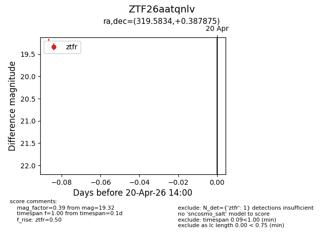
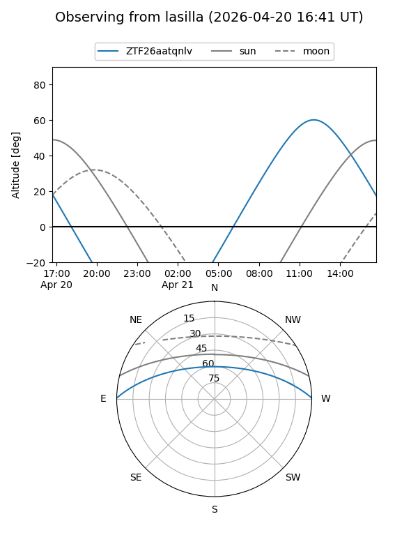
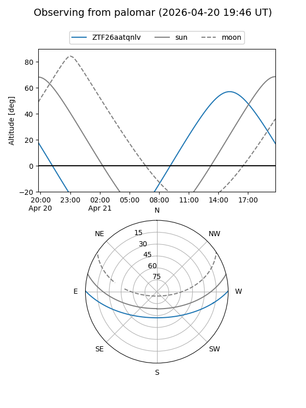

ZTF26aatqnlv
Target ZTF26aatqnlv at 2026-04-20 14:11
Aliases and brokers:
FINK: link
Lasair: link
ALeRCE: link
alt names
ZTF26aatqnlv (ztf,fink_ztf)
Coordinates:
equatorial (ra, dec) = 319.5834,+0.38788
equatorial (HMS+DMS) = 21:18:20.02,+00:23:16.35
galactic (l, b) = (52.1042,-31.94321)
Flags:
Photometry:
last ztfr=19.32
1 ztfr detections
Lightcurve

Visibility


Additional plots